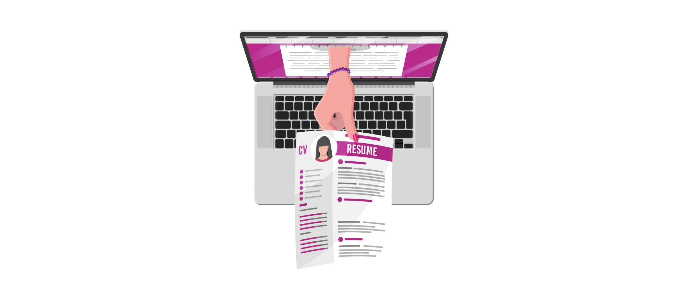

CvBot Resume Builder
helps you get hired at top companies
Excellent
⭐⭐⭐⭐⭐
4,662 Reviews

Companies often receive hundreds of resumes for every job posting they put out. They and their hiring managers don't have the time to go through each resume individually, so they use software, often called Applicant Tracking Systems (ATS), to filter through all the resumes they receive.
You need to make sure your resume is read correctly by these ATS and resume screening software. If it is not, your resume could get instantly rejected by these systems and never make its way to a recruiter or hiring manager.
You get several free uploads to our resume scanner. If you have different versions of your resumes (and you should, especially if you are applying to different industries!), you can test each of your resumes through our resume scanner.
This allows you to evaluate all versions of your resume for not only ATS friendliness, but also other key criteria (like impact, hard skills and core competencies), to make sure you get as many interviews as possible.
To get started, upload your resume in PDF. If you're wondering if PDFs can be read by ATS, the answer is yes! Unless specified, always use PDF. All ATS can read them perfectly as long as you stick to the guidelines we've outlined above — i.e. ensure your resume is not a scan, is not an image and uses standard formatting.
Here are some guidelines you should follow to ensure your resume gets correctly scanned by all applicant tracking systems.
Use standard section titles: Label your work experience and education sections with conventional section titles. For example, use "Professional Experience" instead of "My career in a nutshell".
Use standard fonts: Some newer fonts convert letters to special characters which often get scanned incorrectly by ATS. Where possible, stick to a standard font (Garamond, Arial, Calibri).
Single-column layouts: Modern ATS are better at scanning multi-column layouts, but some still struggle. Stick to single-column for safest parsing.
No tables: Tables rarely get parsed correctly. Use tabs and right/left aligns instead.
No scanned documents, pictures or diagrams: Text must be highlightable and readable. Avoid pie charts, graphs, or scanned PDFs.
⭐⭐⭐⭐⭐ "Super helpful and easy to use!"
⭐⭐⭐⭐☆ "Got my resume score in seconds!"
⭐⭐⭐⭐⭐ "This site saved me hours!"
⭐⭐⭐⭐☆ "Love the clean design."
⭐⭐⭐⭐⭐ "Interview calls increased after I improved my resume!"
⭐⭐⭐⭐☆ "Useful and beginner-friendly."
⭐⭐⭐⭐⭐ "Impressed by the accuracy of the score!"
⭐⭐⭐⭐☆ "The feedback was spot on."
⭐⭐⭐⭐⭐ "Perfect tool for freshers like me!"
⭐⭐⭐⭐☆ "My HR even appreciated my improved resume."